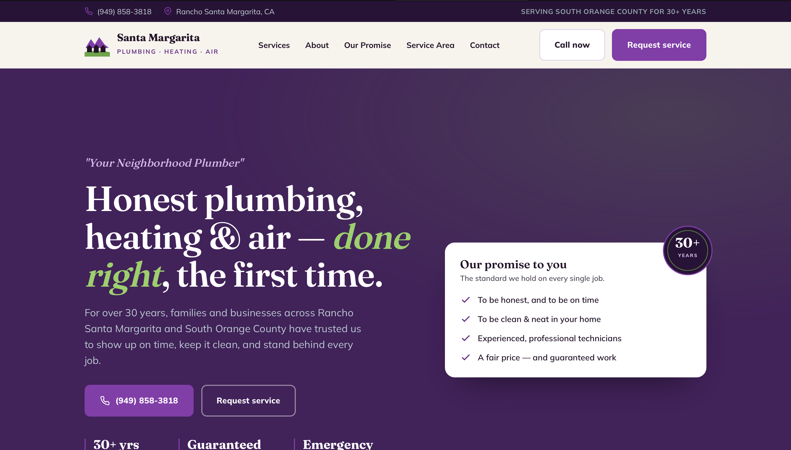
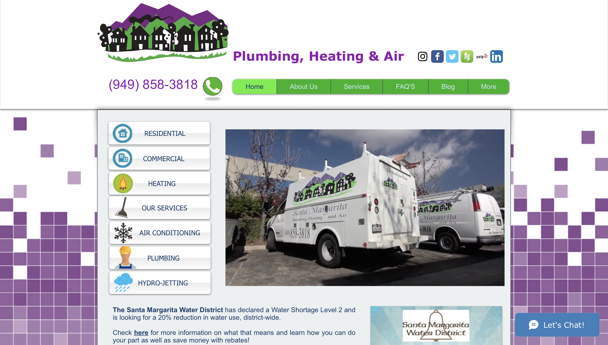

OC Web Work · proposed redesign
Santa Margarita Plumbing — before & after
Drag the handle to wipe between the current site and the rebuild.
santamargaritaplumbing.com
DRAG TO COMPARE →
After

Before

Current site on the left, proposed rebuild on the right — drag to compare. Mockup by OC Web Work.